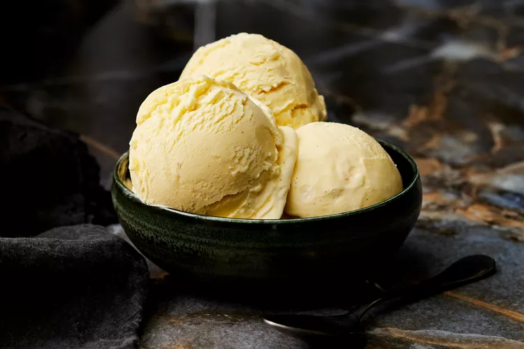

Vanilla Icecream

Description
A childhood favorite, this homemade vanilla ice cream is infused with aromatic vanilla beans for instant feelings of nostalgia with every lick.
Ingredients
- 1 vanilla bean, split lengthwise
- 3 cups half-and-half
- 3 cups heavy cream
- 1/2 cup + 2 tablespoons sugar
- 8 egg yolks
Steps
- Scrape out seeds from vanilla bean with a sharp paring knife. Add seeds and pods to a medium, heavy saucepan.
- Add the half-and-half, cream, and sugar and bring to a simmer over moderate heat, stirring to dissolve the sugar. Cover and let steep off the heat for 30 minutes.
- Whisk the egg yolks in a large stainless-steel bowl. Very gradually whisk in 1/2 cup of the hot half-and-half mixture, then gradually whisk in the rest. Pour the mixture into the saucepan and cook over very low heat, stirring constantly, until the custard thickens, about 10 minutes. The custard should be thick enough to coat the back of a spoon.
- Strain the custard into a large stainless-steel bowl set in an ice water bath and discard the vanilla pod. Stir occasionally until the custard is thoroughly chilled. Pour the custard in an ice cream maker, in batches, according to the manufacturer's instructions. Churn until the ice cream is set but not rock hard. Store the ice cream in airtight containers in the freezer for up to 3 days.
Home